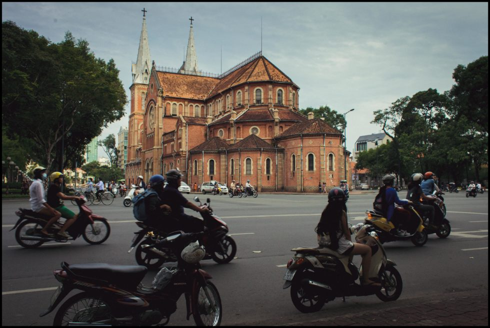
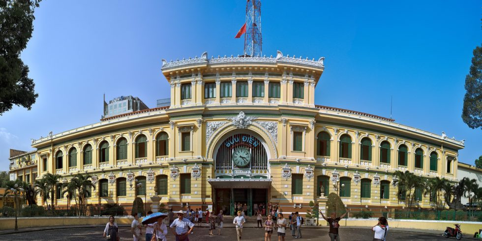
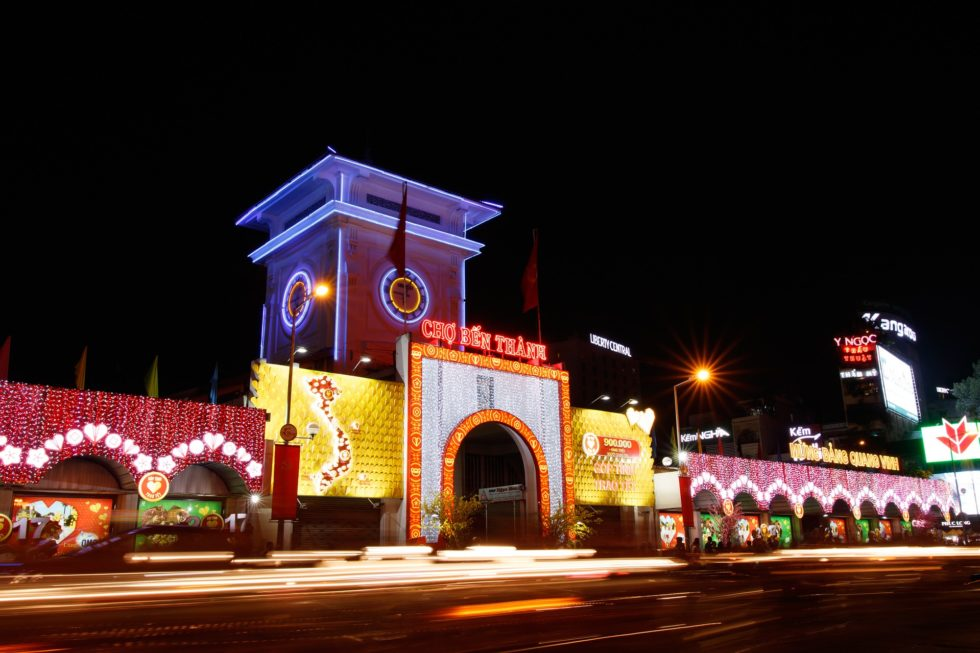

Geography
Ho Chi Minh City is nearly 1,730km by road from Vietnam’s capital, Hanoi. Located at the international crossroads between the maritime routes from North to South, from East to West, Ho Chi Minh city is the focal point of Southeast Asia. The North borders Binh Duong province, the Northwest borders Tay Ninh province, the East and Northeast borders Dong Nai province, the Southeast borders Ba Ria – Vung Tau province, the West and Southwest border Long An. Ho Chi Minh City consists of 19 districts and 5 districts from Hoc Mon field to Can Gio district, from Thu Duc orchard to remote Binh Chanh district, it’s all part of Ho Chi Minh city. As of July 2021, according to the World Population Review website, the population of Ho Chi Minh City reached 8,837,544 people.
Saigon’s Weather – When to go?
Ho Chi Minh City is located in the South, which is a tropical monsoon sub-equatorial region, so the temperature is consistently high throughout the year. The two seasons, rainy and dry, clearly have a profound impact on the city landscape.
The rainy season lasts from April to September The dry season covers the rest of the year
Therefore, if you want to travel to Saigon, you should choose the sunny season. However, in the hot season, the temperature in Saigon is quite high with an average of about 28 degrees Celsius and the highest in April (30.5 degrees Celsius), the lowest, in December at about 26 degrees Celsius. During the day, Saigon is bustling and hasty because everyone seems to be racing with the pace of life, Saigon at night is splendid and luxurious like a queen. Coming to Ho Chi Minh City, we cannot ignore the following places.
Traveling to Ho Chi Minh City
As Vietnam’s largest city, Saigon possesses an extremely modern and developed transport network. There are many ways for visitors to come to this historic city.
Airplane (for international or domestic guests)
Tan Son Nhat Airport is 8km from the city center, very convenient for moving into the city. Currently, at this airport, dozens of planes take off or land daily from 3 domestic airlines: Vietnam Airlines, Vietjet, Bamboo… It’s also a busy international airport, with direct flights coming from the USA, Europe, Middle-East, and Asia. For cheap flight tickets, you can refer to two airlines Vietjet and Jetstar with many preferential flight tickets ranging from 199,000VND to 900,000 VND for domestic flights. There will be many flight schedules during the day so you can choose to move whenever you need.
Transportation to/from Tan Son Nhat Airpot
After landing at the airport, you can reach the city center by taxi, private hire, bus or shuttle: - For taxis, prices range from 200 000VND – 300 000VND from the airport to the inner city. - Uber’s equivalent in Vietnam is Grab, prices range from 200 000VND – 300 000VND from the airport to the inner city. - Bus number 152, bus 159, Shuttle Bus 49 with travel time from 30 to 65 minutes/time, ticket prices range from 6,000VND to 40,000 VND/pax/way.
Train
If you have a lot of time and want to go enjoy the scenery, then do not hesitate to choose the train. Gently moving on the road, watching each rustic idyllic countryside slowly pass through the eyes, and having private space with friends to chat, will definitely make your Saigon tour more unforgettable. If starting from Hanoi station, you should use the train connecting the North-South named Thong Nhat. The final destination is Saigon station in the District 3 area, quite close to the central area of District 1. Train ticket prices currently depend a lot on the class of seats, compartments, and the type of trains you choose. Normally, the train route from Hanoi to Saigon varies from 578,000VND to 2,200,000 VND/pax/ticket with a total travel time of 30 hours.
Shuttle Bus
If you are already in Vietnam, you can choose to travel by Shuttle Bus, this is a cheap and economical means of transportation. The car companies you can choose from are Phuong Trang, Thanh Buoi, Tuan Tu… You can go directly to the bus companies’ website to book tickets online. Ticket prices range from 200 000VND – 350 000VND, the price will be 100 000VND -200 000VND during high seasons.
Transportation within Ho Chi Minh City
If you don’t book a package tour, some of the popular means of transportation to tourist areas in Saigon are taxis, motorbike rentals, buses, cyclos, or Saigon water buses. Taking a taxi / Grab is suitable for groups of friends or families. If you want to explore the streets, renting a motorbike or cyclo is the most convenient. Motorbike rental price ranges from 80,000 – 200,000 VND/day. Cyclo prices are calculated by the hour, with a cost of about 50,000 – 80,000 VND for 2 people and only circulate in the central area.
Top attractions
1. Saigon Notre-Dame Basilica
Notre Dame Cathedral has long become a symbol of this city. In the middle of a peaceful and modern place, Notre Dame Cathedral has a special nostalgic and peaceful feature. This work is designed in the Roman and Gothic architectural styles of Europe, so it is boldly ancient and is considered one of the 19 most beautiful basilicas in the world.
2. Saigon Central Post Office
Located at 2, Paris Commune Square, District 1. This is a structure designed by architect Villedieu and erected by the Frenchs. The architecture is European style combined with Asian decoration.
3. Crescent Lake – Starlight Bridge
This location is located in District 7, Ho Chi Minh City. The initiative serves as a weekend or holiday destination for young people. Walking through Crescent Lake and Starlight Bridge, unlike other parks, gives you the sensation of being in a sophisticated and elegant city overseas.
4. Ben Thanh market
It is the oldest market in Saigon, both ancient and modern. Ben Thanh Market is a destination not to be missed if traveling to Ho Chi Minh. Operating from 7 am to 7 pm. This market is quite famous for selling all kinds of goods for domestic and foreign tourists. Also one of the symbols of Saigon.
5. The Reunification Palace
The Reunification Palace is situated on a 15-hectare plot of land in the city’s centre. This is a one-of-a-kind architectural work that has been linked to numerous significant historical events in the country.
6. War Remnants Museum
This is the most accurate depiction of the brutal conflict that the Vietnamese people have lived through. In the Con Dao jail, artifacts like airplanes, guns, tanks, guillotines, and two compartments “tiger cages” were constructed to scale. There is also a gallery dedicated to the conflict on the southern frontier, the war to protect the northern border, the problem of the Spratly archipelago, and the hostile forces’ plot….
7. Nguyen Hue Walking Street
For a long time, Nguyen Hue Street has been the central arterial road of Saigon. Put into use since 2015, Nguyen Hue pedestrian street is the most beautiful and modern square in Vietnam. When the sun started to fade, the street became crowded again, becoming a gathering place for fun. Especially when it comes to the Lunar New Year, the flower exhibition held here attracts a lot of people’s attention.
8. Cu Chi Tunnels
Cu Chi Tunnels is a resistance base located deep in the ground from the time of the Indochina war. This relic has a system of tunnels between meeting rooms, infirmaries, residences, warehouses… with a length of up to 200km. When you come here to visit, you should bring sports shoes to make the movement more convenient.
9. Golden Dragon Water Puppet Theater
Water puppetry is an ancient art form that originated in the North (Red River Delta) and has since expanded and spread around the world. This art form is frequently performed on religious and exceptional events such as holidays, village festivals, New Year’s Day, and so on…
10. Bach Dang Wharf (District 1, Ho Chi Minh City)
Bach Dang Wharf owns a beautiful position at address 2, Ton Duc Thang Street, Ben Nghe Ward, District 1, Ho Chi Minh City. As one of the famous tourist attractions in Saigon related to important historical milestones of Vietnam, Bach Dang Wharf has attracted the attention of many foreign tourists. With the charming beauty next to the Saigon River, from the late 1950s to the 1960s, Bach Dang Wharf was the ideal dating place for many lovers. At night, this place is shimmering and beautiful with a system of luxurious restaurant trains.
11. Bui Vien Walking Street
Bui Vien is a place where you will have endless fun. Every restaurant, pub, bar is always crowded with customers from the evening until the next morning. This is a familiar gathering place for young people in the city and visitors every night. In addition, there are many other places that are equally attractive, surely the following articles will describe in more detail for you each famous place in Saigon.
You should try some extremely attractive dishes in Saigon:
-
Broken rice
-
Hu Tieu
-
Mixed rice paper
-
Banh Canh
-
Bun Dau Mam Tom
-
Beef Hot Pot
-
Snails (if you dare trying this dish)
To be able to experience all the cuisines without having to spend too much time and move many places, you can refer to some of the following famous food streets:
Saigon’s best markets
1.Ben Thanh Market Quach Thi Trang Square, District 1
See on google map2.Binh Tay Market 57A Thap Muoi, District 6
See on google map3.Saigon Square Saigon Square 1, 77-89 Nam Ky Khoi Nghia, District 1
See on google mapSaigon’s insider tips
-
Book flights early: Usually, you can book 1 month in advance or 15 days before the flight, prices will be cheaper.
-
When coming to Vietnam, you should download Grab and Gojek apps to book a car or motorbike with chauffeur to go anywhere and save money.
-
Avoid going to the street during rush hours: from 8am-9am and 17h-18h30 if you want to avoid traffic jams.
-
Bring credit cards, cash, identification papers.
-
Shoppers must bargain, all the time (except in supermarkets).
-
Be careful with your wallet, identity papers, money and valuable items.
-
Do not use the phone while walking in the inner city of Saigon to avoid theft.
Above are our tips for your journey in Ho Chi Minh City (Saigon) Vietnam. In addition to the ancient architecture, unique street food, busy shopping markets, Saigon people are also very friendly. Hopefully, this article will help readers have a complete experience in their journey.

Submit a comment
Your email address will not be published. Required fields are marked *